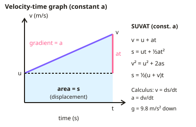

A-level Maths Year 12 · Topic C
Mechanics
Mechanics is the maths of motion and forces, used to model how real objects move.
We will use S I units and modelling assumptions, motion graphs, and the constant acceleration equations, including vertical motion under gravity.
Then we use calculus for variable acceleration, resolve forces, apply Newton's laws, and solve problems with connected particles.
- 10 subtopics
- 601 questions
- Free: C1 notes and 10 questions
In this topic
- C1KinematicsFree below · 70 questions
- C2Forces and Newton's lawsOpen in Full Marks · 70 questions
- C.3Quantities, SI units and modelling assumptions in mechanicsOpen in Full Marks · 69 questions
- C.4Displacement-time and velocity-time graphsOpen in Full Marks · 63 questions
- C.5Constant acceleration (suvat) equations and vertical motion under gravityOpen in Full Marks · 47 questions
- C.6Variable acceleration: using differentiation and integration in kinematicsOpen in Full Marks · 63 questions
- C.7Resolving forces, equilibrium and forces as vectorsOpen in Full Marks · 64 questions
- C.8Connected particles: pulleys, towing and Newton's third lawOpen in Full Marks · 65 questions
- C.9Momentum: conservation of momentum and collisions in a straight lineOpen in Full Marks · 34 questions
- C.10Work, energy and power: work done, kinetic and potential energy, and powerOpen in Full Marks · 56 questions
C1 · Free notes
Kinematics

Key points
- SUVAT equations apply for constant acceleration: v = u + at; s = ut + ½at²; v² = u² + 2as; s = ((u + v) ÷ 2)t.
- Displacement, velocity and acceleration are vectors; speed and distance are scalars.
- On a velocity-time graph, gradient = acceleration and area = displacement.
- For vertical motion under gravity, take g = 9.8 m/s² downwards and be consistent with the positive direction.
- Motion can also be analysed using calculus, with velocity as the derivative of displacement and acceleration as the derivative of velocity.
In more detail
- Worked suvat: u = 4 m s⁻¹, a = 2 m s⁻², t = 5 s → v = 4 + 10 = 14 m s⁻¹ and s = 4 × 5 + ½ × 2 × 25 = 45 m.
- Worked stopping: from 20 m s⁻¹ braking at 5 m s⁻² → 0 = 20² − 2 × 5 × s → s = 40 m.
- Worked vertical: thrown up at 14.7 m s⁻¹ → greatest height = 14.7² ÷ (2 × 9.8) = 11.0 m, reached after 1.5 s.
- Worked calculus: s = t³ − 6t² → v = 3t² − 12t = 3t(t − 4) → at rest when t = 0 and t = 4.
Practice
Kinematics: 10 questions
Pick an answer to check it, or open the answer for the explanation.
1. An object accelerates from rest at 5 m/s² for 4 s. What is its final velocity?
- 1.25 m/s
- 9 m/s
- 20 m/s
- 80 m/s
Show answer
C: 20 m/s. v = u + at = 0 + 5 × 4 = 20 m/s.
2. What does the area under a velocity-time graph give?
- Acceleration
- Displacement
- Force
- Speed
Show answer
B: Displacement. Velocity × time gives displacement.
3. An object is dropped from rest. How far does it fall in 3 s? (g = 9.8 m/s²)
- 14.7 m
- 29.4 m
- 44.1 m
- 88.2 m
Show answer
C: 44.1 m. s = ½at² = ½ × 9.8 × 9 = 44.1 m.
4. Which of these is a vector quantity?
- Speed
- Distance
- Displacement
- Time
Show answer
C: Displacement. Displacement includes direction.
5. How is acceleration obtained from a displacement function using calculus?
- Integrate once
- Differentiate once
- Differentiate twice
- Integrate twice
Show answer
C: Differentiate twice. Differentiating displacement gives velocity, and again gives acceleration.
6. A car decelerates from 20 m/s to rest in 5 s. What is its acceleration?
- 4 m/s²
- −4 m/s²
- 100 m/s²
- −100 m/s²
Show answer
B: −4 m/s². a = (0 − 20) ÷ 5 = −4 m/s².
7. An object travels at 12 m/s for 3 s then accelerates at 2 m/s² for 4 s. How far does it travel in total?
- 48 m
- 84 m
- 100 m
- 52 m
Show answer
C: 100 m. First leg: 12 × 3 = 36 m. Second leg: 12 × 4 + ½ × 2 × 4² = 48 + 16 = 64 m. Total = 36 + 64 = 100 m.
8. Which quantity is the gradient of a displacement-time graph?
- Acceleration
- Velocity
- Distance
- Force
Show answer
B: Velocity. Change in displacement over time is velocity.
9. A car accelerates uniformly from 10 m/s to 30 m/s over a distance of 100 m. What is its acceleration?
- 20 m/s²
- 8 m/s²
- 4 m/s²
- 2 m/s²
Show answer
C: 4 m/s². Use v² = u² + 2as: 900 = 100 + 200a, so a = 800 ÷ 200 = 4 m/s². Taking v − u = 20 and dividing by s gives the wrong 0.2.
10. A ball is thrown vertically upwards at 14.7 m/s. How long does it take to reach its highest point? (g = 9.8 m/s²)
- 0.67 s
- 14.7 s
- 1.5 s
- 3.0 s
Show answer
C: 1.5 s. At the top v = 0, so 0 = 14.7 − 9.8t, giving t = 1.5 s. 3.0 s is the time to return to the launch point.
Keep going in Full Marks
Full Marks has 70 questions on Kinematics (60 more than here), set out in practice levels. You also get notes and 3D models for all 10 subtopics of Mechanics, plus games, timed exams and past papers.
On your exam board
- AQATopic 15: Quantities and units in mechanics, Topic 16: Kinematics, Topic 17: Forces and Newton's laws
- OCR ATopic 15: Quantities and units in mechanics, Topic 16: Kinematics, Topic 17: Forces and Newton's laws
- OCR BTopic 15: Quantities and units in mechanics, Topic 16: Kinematics, Topic 17: Forces and Newton's laws
- EdexcelTopic 15: Quantities and units in mechanics, Topic 16: Kinematics, Topic 17: Forces and Newton's laws
- CambridgeTopic 4.1: Forces and equilibrium, Topic 4.2: Kinematics of motion in a straight line, Topic 4.3: Momentum, Topic 4.4: Newton's laws of motion, Topic 4.5: Energy, work and power